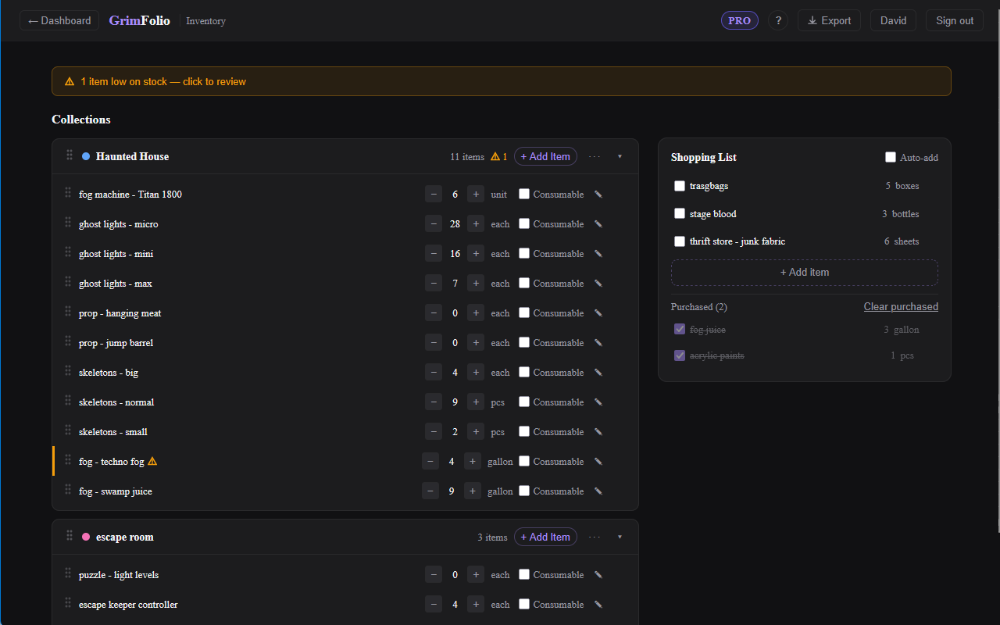

Inventory
The Inventory Manager is GrimFolio's material tracking system. It lives outside any individual project so your prop collections, consumable supplies, and tools are available to every project you build. Track quantities, set low-stock alerts, manage a shopping list, and assign items to specific cards. The system has two faces: a full standalone page for managing your inventory in detail, and a panel inside Stage 2 Build for assigning items to cards and tracking consumption.
The Standalone Inventory Page
Access the Inventory Manager from the Dashboard library cards. The page is split into two columns: Collections on the left and Shopping List on the right.

Collections
Everything in your inventory lives inside a collection. A collection is a named color-coded group of items. You might have one for props, one for fog machines and effects, one for consumables like fake blood and adhesive.
Click + New Collection at the bottom of the left panel to create one. Pick a color from the preset palette and type a name.
Collection header elements:
| Element | What it does |
|---|---|
| Color swatch | Visual identifier. Click ··· then Change color to update. |
| Name | Double-click to rename inline. |
| Item count | Number of items in the collection. |
| Low-stock badge | Amber triangle when one or more items are below their threshold. |
| + Add Item | Opens an inline row to add a new item. |
| ··· menu | Rename, Change color, Delete (requires confirmation). |
| Collapse arrow | Collapses the item list without removing anything. |
Collections are draggable. Grab the handle on the left of the header and drag to reorder.
Items
Click + Add Item on any collection header, type the item name, and press Enter or click Add. Items start with a quantity of 1 and the unit "each."
| Element | What it does |
|---|---|
| Drag handle | Reorder items within the collection. |
| Name | Double-click to rename. |
| Quantity stepper | − and + buttons change quantity by 1. Click the number to type a value directly. |
| Unit | Click to edit. Accepts any text: pcs, ft, gallons, etc. |
| Consumable toggle | Marks the item as a consumable. Enables the low-stock threshold field. |
| Alert at | Sets the low-stock threshold. Only appears when Consumable is checked. |
| Notes button | Expands a notes text area beneath the row. |
| Delete button | Visible on hover. Deletes immediately without confirmation. |
Right-click any item to access a small context menu: Rename, Add to Shopping List, Delete.
Low-Stock Alerts
When any consumable item's quantity reaches its threshold an amber warning icon appears on the item row and on the collection header. A banner appears at the top of the page when any item is flagged. Clicking the banner scrolls to the first flagged item.
Shopping List
The right panel is a project-agnostic shopping list. Add items manually with + Add item or send items there from any collection row via right-click.
Check an item to mark it purchased. If Auto-add is toggled on and the item was added from a specific collection, marking it purchased automatically increments that item's quantity in the linked collection.
The Purchased section at the bottom accumulates checked items. Click Clear purchased to remove them.
Exporting Inventory
The Export button in the top bar generates a PDF of your full inventory showing all collections and their current quantities.
Inventory Inside Stage 2
When you are in Stage 2 Build, click the Inventory button in the left toolbar to open the Inventory panel. This panel only shows collections that have been linked to the current project.
Linking a Collection to a Project
From inside Stage 2 click + Link a collection at the bottom of the Inventory panel. A picker opens listing all your collections. Check which ones should be accessible in this project. From the standalone page you can also open any collection and link it to projects from the collection header menu.
Once a collection is linked its items appear in the panel tabs.
Items Tab
Shows all items with an Item category. Each row displays the item name, available quantity (total minus any quantity currently in use), and an Assign button.
Clicking Assign enters pick mode. A banner appears: "Click a card to assign [item name]." Click any card on the canvas to complete the assignment. The item then appears in that card's Inventory section in the detail drawer. Press Escape to cancel.
Consumables Tab
Shows items with a Consumable category. The quantity shown is the current on-hand count. An amber dot replaces the status dot when the item is at or below its threshold.
Each consumable has a Use button. Clicking it opens a quantity popover. Confirm the amount used and the quantity updates immediately.
Tools Tab
Shows items with a Tool category. Each row has an inline text field for owner or condition notes. Notes save automatically.
Inventory in the Card Drawer
The card detail drawer in Stage 2 has an Inventory section. Items assigned via the Inventory panel appear here showing what is allocated to that card. You can view assignments without leaving the drawer.
Inventory in Stage 3
The Inventory widget in Stage 3 Production shows all inventory items assigned to cards across the project grouped by card name. Each row shows item name, quantity in use, quantity available, and a ⚠ Low badge when stock is at or below the threshold. Consumable items have a Use Some button for logging consumption directly from the Production board.
A collapsible Collection Overview section at the bottom of the widget shows all linked collections with low-stock alerts across every item.